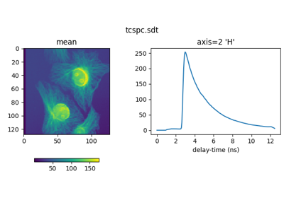

Programming interface# Tutorials on specific modules, classes, and functions: Förster Resonance Energy Transfer Förster Resonance Energy Transfer Principal component analysis Principal component analysis Multi-harmonic phasor coordinates Multi-harmonic phasor coordinates Cursors Cursors Phasor coordinates from lifetimes Phasor coordinates from lifetimes Synthesize signals from lifetimes Synthesize signals from lifetimes  File input/output File input/output Phasor plot Phasor plot Filter phasor coordinates Filter phasor coordinates Component analysis Component analysis